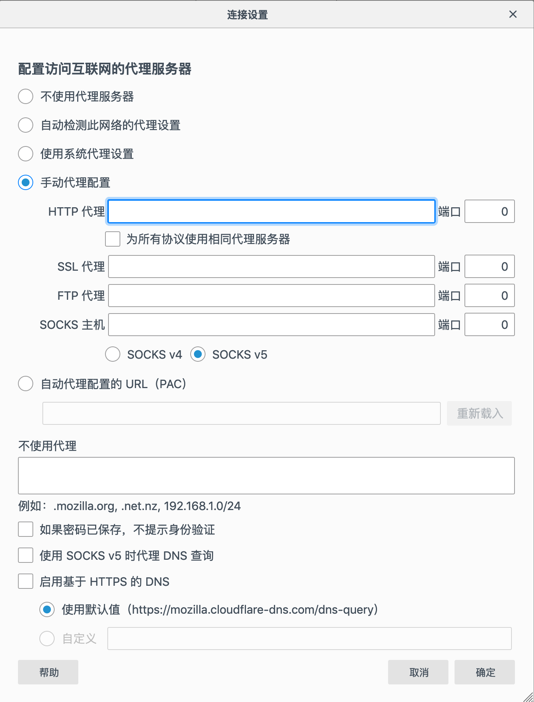

如何在 Ubuntu 18.04 上安装和配置 Squid 代理
Squid 是一个功能齐全的缓存代理，支持流行的网络协议，如 HTTP ， HTTPS ， FTP 等。 Squid 主要用于通过缓存重复请求，过滤 Web 流量和访问地理限制内容来提高 Web 服务器的性能。
本教程将引导您完成在 Ubuntu 18.04 上设置 Squid 代理并配置 Firefox 和 Google Chrome Web 浏览器以使用它的过程。
在 Ubuntu 上安装 Squid
Squid 包包含在默认的 Ubuntu 18.04 存储库中。要安装它，请使用 sudo 用户运行以下命令：
sudo apt update
sudo apt install squid
安装完成后， Squid 服务将自动启动。
要验证安装是否成功并且 Squid 服务是否正在运行，请键入以下命令以打印服务状态：
sudo systemctl status squid
● squid.service - LSB: Squid HTTP Proxy version 3.x
Loaded: loaded (/etc/init.d/squid; generated)
Active: active (running) since Thu 2019-06-27 11:45:17 UTC
...
配置 Squid
可以通过编辑 /etc/squid/squid.conf 文件来配置 Squid 。您还可以使用带有配置选项的分隔文件，可以使用 “include” 指令包含这些选项。
配置文件包含描述每个配置选项的注释。
在进行任何更改之前，最好备份原始配置文件：
sudo cp /etc/squid/squid.conf{,.orginal}
要编辑文件，请在文本编辑器中将其打开：
sudo nano /etc/squid/squid.conf
默认情况下， Squid 配置为侦听服务器上所有网络接口上的 3128 端口。
如果要更改端口并设置侦听接口，请找到以 http_port 开头的行，并指定接口 IP 地址和新端口。如果没有指定网络接口， Squid 将监听所有网络接口。
/etc/squid/squid.conf 中
# Squid normally listens to port 3128
http_port IP_ADDR:PORT
在所有接口和默认端口上运行 Squid 应该适合大多数用户。
另一个有趣的选择是 forwarded_for 。默认情况下，将其设置为 on 表示 out-box Squid 的行为类似于 RFC 兼容代理，并在 X-Forwarded-For 标头中添加客户端的 IP 地址。如果要设置透明代理，请取消注释该指令并将其更改为 transparent 。
将指令设置为 off 将告诉 Squid 不要在 HTTP 请求中转发附加客户端的 IP 地址。
/etc/squid/squid.conf 中
#Default:
# forwarded_for on
在 Squid 中，您可以使用访问控制列表 (ACL) 控制客户端如何访问 Web 资源。
默认情况下， Squid 只允许从 localhost 访问。
如果将使用代理的所有客户端都具有静态 IP 地址，则可以创建包含允许的 IP 的 ACL 。
我们将创建一个新的专用文件来保存 IP ，而不是在主配置文件中添加 IP 地址：
/etc/squid/allowed_ips.txt
192.168.33.1
# All other allowed IPs
完成后，打开主配置文件并创建一个名为 allowed_ips (第一个突出显示的行) 的新 ACL ，并允许使用该 http_access 指令(第二个突出显示的行)访问该 ACL ：
/etc/squid/squid.conf 中
# ...
acl allowed_ips src "/etc/squid/allowed_ips.txt"
# ...
#http_access allow localnet
http_access allow localhost
http_access allow allowed_ips
# And finally deny all other access to this proxy
http_access deny all
http_access 规则的顺序很重要。请务必先添加该行 http_access deny all 。
该 http_access 指令的工作方式与防火墙规则类似。 Squid 从上到下读取规则，当规则匹配时，不处理下面的规则。
每当您更改配置文件时，都需要重新启动 Squid 服务才能使更改生效：
sudo systemctl restart squid
Squid身份验证
Squid 可以对经过身份验证的用户使用不同的后端，包括 Samba ， LDAP 和 HTTP 基本身份验证。
在本教程中，我们将配置 Squid 以使用基本身份验证。它是 HTTP 协议中内置的简单身份验证方法。
我们将使用 openssl 生成密码并使用 tee 命令将该 username:password 对附加到 /etc/squid/htpasswd 文件，如下所示：
printf "USERNAME:$(openssl passwd -crypt PASSWORD)\n" | sudo tee -a /etc/squid/htpasswd
让我们创建一个名为 “john” 的用户，密码为 Sz$Zdg69：
printf "josh:$(openssl passwd -crypt 'Sz$Zdg69')\n" | sudo tee -a /etc/squid/htpasswd
josh:RrvgO7NxY86VM
现在创建了用户，下一步是配置 Squid 以启用 HTTP 基本身份验证并使用该文件。
打开主配置并添加以下内容：
/etc/squid/squid.conf 中
# ...
auth_param basic program /usr/lib/squid3/basic_ncsa_auth /etc/squid/htpasswd
auth_param basic realm proxy
acl authenticated proxy_auth REQUIRED
# ...
#http_access allow localnet
http_access allow localhost
http_access allow authenticated
# And finally deny all other access to this proxy
http_access deny all
前三个突出显示的行正在创建一个名为 authenticated 的新 ACL ，倒数第三行行允许访问经过身份验证的用户。
重启 Squid 服务：
sudo systemctl restart squid
配置防火墙
假设您正在使用 UFW 管理防火墙，则需要打开 Squid 端口。为此启用 “Squid” 配置文件，其中包含默认 Squid 端口的规则。
sudo ufw allow 'Squid'
要验证状态类型：
sudo ufw status
输出将如下所示：
Status: active
To Action From
-- ------ ----
22/tcp ALLOW Anywhere
Squid ALLOW Anywhere
22/tcp (v6) ALLOW Anywhere (v6)
Squid (v6) ALLOW Anywhere (v6)
例如，如果 Squid 在另一个非默认端口 8888 上运行，则可以使用后面的命令允许该端口上的流量： sudo ufw allow 8888/tcp 。
配置浏览器以使用代理
现在您已经设置了 Squid ，最后一步是配置您首选的浏览器以使用它。
火狐
对于 Windows ， macOS 和 Linux ，以下步骤相同。
-
在右上角，点击汉堡包图标
☰打开 Firefox 的菜单： -
单击
⚙ 首选项链接。 -
向下滚动到该
网络设置部分，然后单击设置...按钮。 -
将打开一个新窗口。
- 选择
手动代理配置单选按钮。 - 在
HTTP 代理字段输入您的 Squid 服务器的 IP 地址， 在端口字段输入3128。 - 选中
为所有协议使用相同代理服务器复选框。 - 单击
确定按钮以保存设置。

- 选择
此时，您的 Firefox 已配置，您可以通过 Squid 代理浏览 Internet 。要验证它，打开 google.com ，键入“我的 IP 是什么”，你应该看到你的 Squid 服务器 IP 地址。
要恢复默认设置，请转到 Network Settings ，选择 Use system proxy settings 单选按钮并保存设置。
还有几个插件可以帮助您配置 Firefox 的代理设置，如 FoxyProxy 。
谷歌 Chrome 浏览器
Google Chrome 使用默认的系统代理设置。您可以使用插件(如 SwitchyOmega) 或从命令行启动 Chrome 网络浏览器，而不是更改操作系统代理设置。
要使用新配置文件启动 Chrome 并连接到 Squid 服务器，请使用以下命令：
Linux：
/usr/bin/google-chrome \
--user-data-dir="$HOME/proxy-profile" \
--proxy-server="http://SQUID_IP:3128"
苹果系统 ：
"/Applications/Google Chrome.app/Contents/MacOS/Google Chrome" \
--user-data-dir="$HOME/proxy-profile" \
--proxy-server="http://SQUID_IP:3128"
Windows：
"C:\Program Files (x86)\Google\Chrome\Application\chrome.exe" ^
--user-data-dir="%USERPROFILE%\proxy-profile" ^
--proxy-server="http://SQUID_IP:3128"
如果配置文件不存在，将自动创建配置文件。这样，您可以同时运行多个 Chrome 实例。
要确认代理服务器是否正常工作，请打开 google.com ，然后键入 “what is my ip” 。浏览器中显示的 IP 应该是服务器的 IP 地址。
结论
您已经学习了如何在 Ubuntu 18.04 上安装 squid 并配置浏览器以使用它。
Squid 是最受欢迎的代理缓存服务器之一。它可以提高 Web 服务器的速度，并可以帮助您限制用户访问 Internet 。